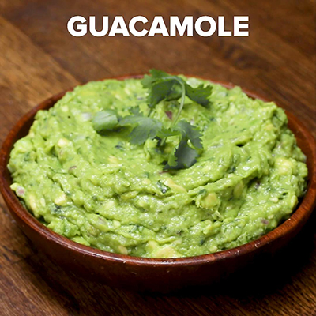

My Favorite Food
Guacamole
Guacamole has five ingredients (sometimes only three).

Ingredients (in order of importance)
- avocado
- lime
- salt
- garlic
- hot chile, such as serrano
Directions
- Peel avocado and remove seed
- Juice the lime
- Crush the garlic
- Crush the chile
- Add salt to taste
- Smash everything together to your liking
For more information check out this site